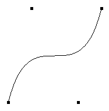
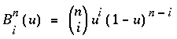
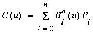
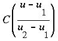
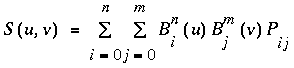
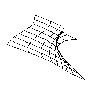
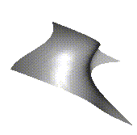
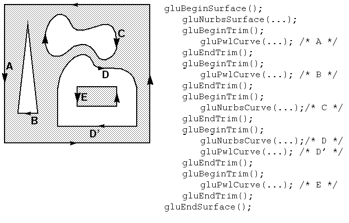
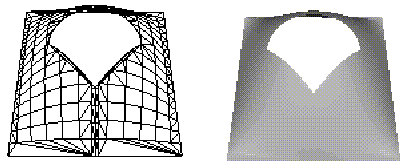

Advanced
After reading this chapter, you'll be able to do the following:
Use the GLU's higher-level NURBS facility to draw more complex curves and surfaces
At the lowest level, graphics hardware draws points, line segments, and polygons, which are usually triangles and quadrilaterals. Smooth curves and surfaces are drawn by approximating them with large numbers of small line segments or polygons. However, many useful curves and surfaces can be described mathematically by a small number of parameters such as a few control points. Saving the sixteen control points for a surface requires much less storage than saving 1000 triangles together with the normal vector information at each vertex. In addition, the 1000 triangles only approximate the true surface, but the control points can accurately describe the real surface.
Evaluators provide a way to specify points on a curve or surface (or part of one) using only the control points. The curve or surface can then be rendered at any precision. In addition, normal vectors can be calculated for surfaces automatically. You can use the points generated by an evaluator in many ways - to draw dots where the surface would be, to draw a wireframe version of the surface, or to draw a fully lighted and shaded version.
You can use evaluators to describe any polynomial or rational polynomial splines or surfaces of any degree. These include almost all splines and spline surfaces in use today, including B-splines, NURBS (Non-Uniform Rational B-Spline) surfaces, Bézier curves and surfaces, and Hermite splines. Since evaluators provide only a low-level description of the points on a curve or surface, however, they're typically used underneath utility libraries that provide a higher-level interface to the programmer. The GLU's NURBS facility is such a higher-level interface - the NURBS routines encapsulate lots of complicated code, but the final rendering is done with evaluators.
This chapter contains the following major sections:
"Evaluators" explains how evaluators work and how to control them using
the appropriate OpenGL commands.
"The GLU NURBS Interface" describes the GLU routines for creating NURBS surfaces.
Similarly, a complete discussion of NURBS is beyond the scope of this book. The GLU NURBS interface is documented here, however, and programming examples are provided for readers who already understand the subject. In what follows, we assume that you know about NURBS control points, knot sequences, and trimming curves.
If you lack some of these prerequisites, the following references will help.
de Boor, Carl. A Practical Guide to Splines. New York: Springer-Verlag,
1985.
Farin, Gerald. Curves and Surfaces for Computer-Aided Geometric Design.
San Diego, Calif: Academic Press, 1990.
Mortenson, Michael. Geometric Modeling. New York: John Wiley
& Sons, 1985.
Newman, William and Sproull, Robert. Principles of Interactive Computer Graphics. New York: McGraw-Hill, 1979.
C(u) = [X(u) Y(u) Z(u)]
where u varies in some domain (say [0,1]). A Bézier surface patch is a vector-valued function of two variables
S(u,v) = [X(u,v) Y(u,v) Z(u,v)]
where u and v can both vary in some domain. The range isn't necessarily three-dimensional as shown here. You might want two-dimensional output for curves on a plane or texture coordinates, or you might want four-dimensional output to specify RGBA information. Even one-dimensional output may make sense for gray levels, for example.
For each u (or u and v, in the case of a surface), the formula for C() (or S()) calculates a point on the curve (or surface). To use an evaluator, first define the function C() or S(), enable it, and then use the glEvalCoord1() or glEvalCoord2() command instead of glVertex(). This way, the curve or surface vertices can be used like any other vertices - to form points or lines, for example. In addition, other commands automatically generate series of vertices that produce a regular mesh uniformly spaced in u (or in u and v). One- and two-dimensional evaluators are similar, but the description is somewhat simpler in one dimension, so that case is discussed first.

Figure 11-1 : A Bézier Curve
Example 11-1 : Drawing a Bézier Curve Using Four Control Points: bezcurve.c
#include <GL/gl.h>
#include <GL/glu.h>
#include "aux.h"
GLfloat ctrlpoints[4][3] = {
{ -4.0, -4.0, 0.0}, { -2.0, 4.0, 0.0},
{2.0, -4.0, 0.0}, {4.0, 4.0, 0.0}};
void myinit(void)
{
glClearColor(0.0, 0.0, 0.0, 1.0);
glMap1f(GL_MAP1_VERTEX_3, 0.0, 1.0, 3, 4,&ctrlpoints[0][0]);
glEnable(GL_MAP1_VERTEX_3);
glShadeModel(GL_FLAT);
}
void display(void)
{
int i;
glClear(GL_COLOR_BUFFER_BIT | GL_DEPTH_BUFFER_BIT);
glColor3f(1.0, 1.0, 1.0);
glBegin(GL_LINE_STRIP);
for (i = 0; i <= 30; i++)
glEvalCoord1f((GLfloat) i/30.0);
glEnd();
/* The following code displays the control points as dots. */
glPointSize(5.0);
glColor3f(1.0, 1.0, 0.0);
glBegin(GL_POINTS);
for (i = 0; i < 4; i++)
glVertex3fv(&ctrlpoints[i][0]);
glEnd();
glFlush();
}
void myReshape(GLsizei w, GLsizei h)
{
glViewport(0, 0, w, h);
glMatrixMode(GL_PROJECTION);
glLoadIdentity();
if (w <= h)
glOrtho(-5.0, 5.0, -5.0*(GLfloat)h/(GLfloat)w,
5.0*(GLfloat)h/(GLfloat)w, -5.0, 5.0);
else
glOrtho(-5.0*(GLfloat)w/(GLfloat)h,
5.0*(GLfloat)w/(GLfloat)h, -5.0, 5.0, -5.0, 5.0);
glMatrixMode(GL_MODELVIEW);
glLoadIdentity();
}
int main(int argc, char** argv)
{
auxInitDisplayMode (AUX_SINGLE | AUX_RGBA);
auxInitPosition (0, 0, 500, 500);
auxInitWindow (argv[0]);
myinit();
auxReshapeFunc (myReshape);
auxMainLoop(display);
}
A cubic Bézier curve is described by four control points, which appear
in this example in the ctrlpoints[][] array. This array is one of
the arguments to glMap1f(). All the arguments for this command are
as follows:
The curve is drawn in the routine display() between the glBegin() and glEnd() calls. Since the evaluator is enabled, the command glEvalCoord1f() is just like issuing a glVertex() command with coordinates that are the coordinates of a vertex on the curve corresponding to the input parameter u.

If Pi represents a set of control points (one-, two-, three-, or even four- dimensional), then the equation

represents a Bézier curve as u varies from 0 to 1. To represent the same curve but allowing u to vary between u1 and u2 instead of 0 and 1, evaluate

The command glMap1() defines a one-dimensional evaluator that uses these equations.void glMap1{fd}(GLenum target, TYPEu1, TYPEu2, GLint stride, GLint order, const TYPE*points);
Defines a one-dimensional evaluator. The target parameter specifies what the control points represent, as shown in Table 11-1 , and therefore how many values need to be supplied in points. The points can represent vertices, RGBA color data, normal vectors, or texture coordinates. Forexample, with GL_MAP1_COLOR_4, the evaluator generates color data along a curve in four-dimensional (RGBA) color space. You also use the parameter values listed in Table 11-1 to enable each defined evaluator before you invoke it. Pass the appropriate value to glEnable() or glDisable() to enable or disable the evaluator.
The second two parameters for glMap1*(), u1 and u2, indicate the range for the variable u. The variable stride is the number of single- or double-precision values (as appropriate) in each block of storage. Thus, it's an offset value between the beginning of one control point and the beginning of the next.
The order is the degree plus one, and it should agree with the number of control points. The points parameter points to the first coordinate of the first control point. Using the example data structure for glMap1*(), use the following for points:
(GLfloat *)(&ctlpoints[0].x)
| Parameter | Meaning |
|---|---|
| GL_MAP1_VERTEX_3 | x, y, z vertex coordinates |
| GL_MAP1_VERTEX_4 | x, y, z, w vertex coordinates |
| GL_MAP1_INDEX | color index |
| GL_MAP1_COLOR_4 | R, G, B, A |
| GL_MAP1_NORMAL | normal coordinates |
| GL_MAP1_TEXTURE_COORD_1 | s texture coordinates |
| GL_MAP1_TEXTURE_COORD_2 | s, t texture coordinates |
| GL_MAP1_TEXTURE_COORD_3 | s, t, r texture coordinates |
| GL_MAP1_TEXTURE_COORD_4 | s, t, r, q texture coordinates |
More than one evaluator can be evaluated at a time. If you have both a GL_MAP1_VERTEX_3 and a GL_MAP1_COLOR_4 evaluator defined and enabled, for example, then calls to glEvalCoord1() generate both a position and a color. Only one of the vertex evaluators can be enabled at a time, although you might have defined both of them. Similarly, only one of the texture evaluators can be active. Other than that, however, evaluators can be used to generate any combination of vertex, normal, color, and texture-coordinate data. If more than one evaluator of the same type is defined and enabled, the one of highest dimension is used.
Use glEvalCoord1*() to evaluate a defined and enabled one-dimensional map.void glEvalCoord1{fd}{v}(TYPE u);
Causes evaluation of the enabled one-dimensional maps. The argument u is the value (or a pointer to the value, in the vector version of the command) that's the domain coordinate.
Defines a grid that goes from u1 to u2 in n steps, which are evenly spaced.
void glEvalMesh1(GLenum mode, GLint p1, GLint p2);
Applies the currently defined map grid to all enabled evaluators. The mode can be either GL_POINT or GL_LINE, depending on whether you want to draw points or a connected line along the curve. The call has exactly the same effect as issuing a glEvalCoord1() for each of the steps between and including p1 and p2, where 0 <= p1, p2 <= n. Programatically, it's equivalent to the following:
glBegin(GL_POINTS); /* OR glBegin(GL_LINE_STRIP); */ for (i = p1; i <= p2; i++) glEvalCoord1(u1 + i*(u2-u1)/n); glEnd();except that if i = 0 or i = n, then glEvalCoord() is called with exactly u1 or u2 as its parameter.

where Pij are a set of m*n control points, and the Bi are the same Bernstein polynomials for one dimension. As before, the Pij can represent vertices, normals, colors, or texture coordinates.
The procedure to use two-dimensional evaluators is similar to the procedure for one dimension:
Enable them by passing the appropriate value to glEnable().
Invoke them either by calling glEvalCoord2() between a glBegin() and glEnd() pair, or by specifying and then applying a mesh with glMapGrid2() and glEvalMesh2().
The target parameter can have any of the values in Table 11-1 , except that the string MAP1 is replaced with MAP2. As before, these values are also used with glEnable() to enable the corresponding evaluator. Minimum and maximum values for both u and v are provided as u1, u2, v1, and v2. The parameters ustride and vstride indicate the number of single- or double-precision values (as appropriate) between independent settings for these values allows users to select a subrectangle of control points out of a much larger array. For example, if the data appears in the form
GLfloat ctlpoints[100][100][3];and you want to use the 4x4 subset beginning at ctlpoints[20][30], choose ustride to be 100*3, and vstride to be 3. The starting point, points, should be set to &ctlpoints[20][30][0]. Finally, the order parameters, uorder and vorder, can be different, allowing patches that are cubic in one direction and quadratic in the other, for example.
void glEvalCoord2{fd}{v}(TYPE u, TYPE v);
Causes evaluation of the enabled two-dimensional maps. The arguments u and v are the values (or a pointer to the value, in the vector version of the command) for the domain coordinates. If either of the vertex evaluators is enabled (GL_MAP2_VERTEX_3 or GL_MAP2_VERTEX_4), then the normal to the surface is computed analytically. This normal is associated with the generated vertex if automatic normal generation has been enabled by passing GL_AUTO_NORMAL to glEnable(). If it's disabled, the corresponding enabled normal map is used to produce a normal. If no such map exists, the current normal is used.

Figure 11-2 : A Bézier Surface
Example 11-2 : Drawing a Bézier Surface: bezsurf.c
#include <GL/gl.h>
#include <GL/glu.h>
#include "aux.h"
GLfloat ctrlpoints[4][4][3] = {
{{-1.5, -1.5, 4.0}, {-0.5, -1.5, 2.0},
{0.5, -1.5, -1.0}, {1.5, -1.5, 2.0}},
{{-1.5, -0.5, 1.0}, {-0.5, -0.5, 3.0},
{0.5, -0.5, 0.0}, {1.5, -0.5, -1.0}},
{{-1.5, 0.5, 4.0}, {-0.5, 0.5, 0.0},
{0.5, 0.5, 3.0}, {1.5, 0.5, 4.0}},
{{-1.5, 1.5, -2.0}, {-0.5, 1.5, -2.0},
{0.5, 1.5, 0.0}, {1.5, 1.5, -1.0}}
};
void display(void)
{
int i, j;
glClear(GL_COLOR_BUFFER_BIT | GL_DEPTH_BUFFER_BIT);
glColor3f(1.0, 1.0, 1.0);
glPushMatrix ();
glRotatef(85.0, 1.0, 1.0, 1.0);
for (j = 0; j <= 8; j++) {
glBegin(GL_LINE_STRIP);
for (i = 0; i <= 30; i++)
glEvalCoord2f((GLfloat)i/30.0, (GLfloat)j/8.0);
glEnd();
glBegin(GL_LINE_STRIP);
for (i = 0; i <= 30; i++)
glEvalCoord2f((GLfloat)j/8.0, (GLfloat)i/30.0);
glEnd();
}
glPopMatrix ();
glFlush();
}
void myinit(void)
{
glClearColor (0.0, 0.0, 0.0, 1.0);
glMap2f(GL_MAP2_VERTEX_3, 0, 1, 3, 4,
0, 1, 12, 4, &ctrlpoints[0][0][0]);
glEnable(GL_MAP2_VERTEX_3);
glEnable(GL_DEPTH_TEST);
glShadeModel(GL_FLAT);
}
Defines a two-dimensional map grid that goes from u1 to u2 in nu evenly spaced steps and from v1 to v2 in nv steps (glMapGrid2*()), and then applies this grid to all enabled evaluators (glEvalMesh2()). The only significant difference from the one-dimensional versions of these two commands is that in glEvalMesh2(), the mode parameter can be GL_FILL as well as GL_POINT or GL_LINE. GL_FILL generates filled polygons using the quad-mesh primitive. Stated precisely, glEvalMesh2() is nearly equivalent to one of the following three code fragments. (It's nearly equivalent because when i is equal to nu or j to nv, the parameter is exactly equal to u2 or v2, not to u1+nu*(u2-u1)/nu, which might be slightly different due to round-off error.)
glBegin(GL_POINTS); /* mode == GL_POINT */ for (i = nu1; i <= nu2; i++) for (j = nv1; j <= nv2; j++) glEvalCoord2(u1 + i*(u2-u1)/nu, v1+j*(v2-v1)/nv); glEnd();or
for (i = nu1; i <= nu2; i++) { /* mode == GL_LINE */
glBegin(GL_LINES);
for (j = nv1; j <= nv2; j++)
glEvalCoord2(u1 + i*(u2-u1)/nu, v1+j*(v2-v1)/nv);
glEnd();
}
for (j = nv1; j <= nv2; j++) {
glBegin(GL_LINES);
for (i = nu1; i <= nu2; i++)
glEvalCoord2(u1 + i*(u2-u1)/nu, v1+j*(v2-v1)/nv);
glEnd();
}
or
for (i = nu1; i < nu2; i++) { /* mode == GL_FILL */
glBegin(GL_QUAD_STRIP);
for (j = nv1; j <= nv2; j++) {
glEvalCoord2(u1 + i*(u2-u1)/nu, v1+j*(v2-v1)/nv);
glEvalCoord2(u1 + (i+1)*(u2-u1)/nu, v1+j*(v2-v1)/nv);
glEnd();
}
Example 11-3 shows the differences necessary to draw the same Bézier surface
as Example 11-2 , but using glMapGrid2() and glEvalMesh2()
to subdivide the square domain into a uniform 8x8 grid. This program also
adds lighting and shading, as shown in Figure 11-3 .

Figure 11-3 : A Lit, Shaded Bézier Surface Drawn Using a Mesh
Example 11-3 : Drawing a Lit, Shaded Bézier Surface Using a Mesh: bezmesh.c
void initlights(void)
{
GLfloat ambient[] = { 0.2, 0.2, 0.2, 1.0 };
GLfloat position[] = { 0.0, 0.0, 2.0, 1.0 };
GLfloat mat_diffuse[] = { 0.6, 0.6, 0.6, 1.0 };
GLfloat mat_specular[] = { 1.0, 1.0, 1.0, 1.0 };
GLfloat mat_shininess[] = { 50.0 };
glEnable(GL_LIGHTING);
glEnable(GL_LIGHT0);
glLightfv(GL_LIGHT0, GL_AMBIENT, ambient);
glLightfv(GL_LIGHT0, GL_POSITION, position);
glMaterialfv(GL_FRONT_AND_BACK, GL_DIFFUSE, mat_diffuse);
glMaterialfv(GL_FRONT_AND_BACK, GL_SPECULAR, mat_specular);
glMaterialfv(GL_FRONT_AND_BACK,GL_SHININESS, mat_shininess);
}
void display(void)
{
glClear(GL_COLOR_BUFFER_BIT | GL_DEPTH_BUFFER_BIT);
glPushMatrix();
glRotatef(85.0, 1.0, 1.0, 1.0);
glEvalMesh2(GL_FILL, 0, 8, 0, 8);
glPopMatrix();
glFlush();
}
void myinit(void)
{
glClearColor (0.0, 0.0, 0.0, 1.0);
glEnable(GL_DEPTH_TEST);
glMap2f(GL_MAP2_VERTEX_3, 0, 1, 3, 4,
0, 1, 12, 4, &ctrlpoints[0][0][0]);
glEnable(GL_MAP2_VERTEX_3);
glEnable(GL_AUTO_NORMAL);
glMapGrid2f(8, 0.0, 1.0, 8, 0.0, 1.0);
initlights();
}
The flat patch is defined over a square with corners at (0, 0), (0, 1), (1, 0), and (1, 1); it generates (0, 0) at corner (0, 0), (0, 1) at corner (0, 1), and so on. Since it's of order 2 (linear degree plus one), evaluating this texture at the point (u, v) generates texture coordinates (s, t). It's enabled at the same time as the vertex evaluator, so both take effect when the surface is drawn. See Figure J-26 . If you want the texture to repeat three times in each direction, change every 1.0 in the array texpts[][][] to 3.0. Since the texture wraps in this example, the surface is rendered with nine copies of the texture map.
Example 11-4 : Using Evaluators for Textures: texturesurf.c
#include <GL/gl.h>
#include <GL/glu.h>
#include "aux.h"
#include <math.h>
GLfloat ctrlpoints[4][4][3] = {
{{ -1.5, -1.5, 4.0}, { -0.5, -1.5, 2.0},
{0.5, -1.5, -1.0}, {1.5, -1.5, 2.0}},
{{ -1.5, -0.5, 1.0}, { -0.5, -0.5, 3.0},
{0.5, -0.5, 0.0}, {1.5, -0.5, -1.0}},
{{ -1.5, 0.5, 4.0}, { -0.5, 0.5, 0.0},
{0.5, 0.5, 3.0}, {1.5, 0.5, 4.0}},
{{ -1.5, 1.5, -2.0}, { -0.5, 1.5, -2.0},
{0.5, 1.5, 0.0}, {1.5, 1.5, -1.0}}
};
GLfloat texpts[2][2][2] = {{{0.0, 0.0}, {0.0, 1.0}},
{{1.0, 0.0}, {1.0, 1.0}}};
void display(void)
{
glClear(GL_COLOR_BUFFER_BIT | GL_DEPTH_BUFFER_BIT);
glColor3f(1.0, 1.0, 1.0);
glEvalMesh2(GL_FILL, 0, 20, 0, 20);
glFlush();
}
#define imageWidth 64
#define imageHeight 64
GLubyte image[3*imageWidth*imageHeight];
void loadImage(void)
{
int i, j;
float ti, tj;
for (i = 0; i < imageWidth; i++) {
ti = 2.0*3.14159265*i/imageWidth;
for (j = 0; j < imageHeight; j++) {
tj = 2.0*3.14159265*j/imageHeight;
image[3*(imageHeight*i+j)] =
(GLubyte) 127*(1.0+sin(ti));
image[3*(imageHeight*i+j)+1] =
(GLubyte) 127*(1.0+cos(2*tj));
image[3*(imageHeight*i+j)+2] =
(GLubyte) 127*(1.0+cos(ti+tj));
}
}
}
void myinit(void)
{
glMap2f(GL_MAP2_VERTEX_3, 0, 1, 3, 4,
0, 1, 12, 4, &ctrlpoints[0][0][0]);
glMap2f(GL_MAP2_TEXTURE_COORD_2, 0, 1, 2, 2,
0, 1, 4, 2, &texpts[0][0][0]);
glEnable(GL_MAP2_TEXTURE_COORD_2);
glEnable(GL_MAP2_VERTEX_3);
glMapGrid2f(20, 0.0, 1.0, 20, 0.0, 1.0);
loadImage();
glTexEnvf(GL_TEXTURE_ENV, GL_TEXTURE_ENV_MODE, GL_DECAL);
glTexParameterf(GL_TEXTURE_2D, GL_TEXTURE_WRAP_S,
GL_REPEAT);
glTexParameterf(GL_TEXTURE_2D, GL_TEXTURE_WRAP_T,
GL_REPEAT);
glTexParameterf(GL_TEXTURE_2D, GL_TEXTURE_MAG_FILTER,
GL_NEAREST);
glTexParameterf(GL_TEXTURE_2D, GL_TEXTURE_MIN_FILTER,
GL_NEAREST);
glTexImage2D(GL_TEXTURE_2D, 0, 3, imageWidth, imageHeight,
0, GL_RGB, GL_UNSIGNED_BYTE, image);
glEnable(GL_TEXTURE_2D);
glEnable(GL_DEPTH_TEST);
glEnable(GL_NORMALIZE);
glShadeModel (GL_FLAT);
}
void myReshape(GLsizei w, GLsizei h)
{
glViewport(0, 0, w, h);
glMatrixMode(GL_PROJECTION);
glLoadIdentity();
if (w <= h)
glOrtho(-4.0, 4.0, -4.0*(GLfloat)h/(GLfloat)w,
4.0*(GLfloat)h/(GLfloat)w, -4.0, 4.0);
else
glOrtho(-4.0*(GLfloat)w/(GLfloat)h,
4.0*(GLfloat)w/(GLfloat)h, -4.0, 4.0, -4.0, 4.0);
glMatrixMode(GL_MODELVIEW);
glLoadIdentity();
glRotatef(85.0, 1.0, 1.0, 1.0);
}
int main(int argc, char** argv)
{
auxInitDisplayMode (AUX_SINGLE | AUX_RGBA | AUX_DEPTH);
auxInitPosition (0, 0, 300, 300);
auxInitWindow (argv[0]);
myinit();
auxReshapeFunc (myReshape);
auxMainLoop(display);
}
Use gluNewNurbsRenderer() to create a pointer to a NURBS object,
which is referred to when creating your NURBS curve or surface.
If desired, call gluNurbsProperty() to choose rendering values,
such as the maximum size of lines or polygons that are used to render your
NURBS object.
Call gluNurbsCallback() if you want to be notified when an error
is encountered. (Error checking may slightly degrade performance.)
Start your curve or surface by calling gluBeginCurve() or gluBeginSurface().
Generate and render your curve or surface. Call gluNurbsCurve()
or gluNurbsSurface() at least once with the control points (rational
or nonrational), knot sequence, and order of the polynomial basis function
for your NURBS object. You might call these functions additional times
to specify surface normals and/or texture coordinates.
Call gluEndCurve() or gluEndSurface() to complete the curve or surface.
![[IMAGE]](figures/surface.both.gif)
Figure 11-4 : A NURBS Surface
Example 11-5 : Drawing a NURBS Surface: surface.c
#include <GL/gl.h>
#include <GL/glu.h>
#include "aux.h"
GLfloat ctlpoints[4][4][3];
GLUnurbsObj *theNurb;
void init_surface(void)
{
int u, v;
for (u = 0; u < 4; u++) {
for (v = 0; v < 4; v++) {
ctlpoints[u][v][0] = 2.0*((GLfloat)u - 1.5);
ctlpoints[u][v][1] = 2.0*((GLfloat)v - 1.5);
if ( (u == 1 || u == 2) && (v == 1 || v == 2))
ctlpoints[u][v][2] = 3.0;
else
ctlpoints[u][v][2] = -3.0;
}
}
}
void myinit(void)
{
GLfloat mat_diffuse[] = { 0.7, 0.7, 0.7, 1.0 };
GLfloat mat_specular[] = { 1.0, 1.0, 1.0, 1.0 };
GLfloat mat_shininess[] = { 100.0 };
glClearColor (0.0, 0.0, 0.0, 1.0);
glMaterialfv(GL_FRONT, GL_DIFFUSE, mat_diffuse);
glMaterialfv(GL_FRONT, GL_SPECULAR, mat_specular);
glMaterialfv(GL_FRONT, GL_SHININESS, mat_shininess);
glEnable(GL_LIGHTING);
glEnable(GL_LIGHT0);
glDepthFunc(GL_LEQUAL);
glEnable(GL_DEPTH_TEST);
glEnable(GL_AUTO_NORMAL);
glEnable(GL_NORMALIZE);
init_surface();
theNurb = gluNewNurbsRenderer();
gluNurbsProperty(theNurb, GLU_SAMPLING_TOLERANCE, 25.0);
gluNurbsProperty(theNurb, GLU_DISPLAY_MODE, GLU_FILL);
}
void display(void)
{
GLfloat knots[8] = {0.0, 0.0, 0.0, 0.0, 1.0, 1.0, 1.0, 1.0};
glClear(GL_COLOR_BUFFER_BIT | GL_DEPTH_BUFFER_BIT);
glPushMatrix();
glRotatef(330.0, 1.,0.,0.);
glScalef (0.5, 0.5, 0.5);
gluBeginSurface(theNurb);
gluNurbsSurface(theNurb,
8, knots,
8, knots,
4 * 3,
3,
&ctlpoints[0][0][0],
4, 4,
GL_MAP2_VERTEX_3);
gluEndSurface(theNurb);
glPopMatrix();
glFlush();
}
void myReshape(GLsizei w, GLsizei h)
{
glViewport(0, 0, w, h);
glMatrixMode(GL_PROJECTION);
glLoadIdentity();
gluPerspective (45.0, (GLdouble)w/(GLdouble)h, 3.0, 8.0);
glMatrixMode(GL_MODELVIEW);
glLoadIdentity();
glTranslatef (0.0, 0.0, -5.0);
}
int main(int argc, char** argv)
{
auxInitDisplayMode (AUX_SINGLE | AUX_RGBA);
auxInitPosition (0, 0, 500, 500);
auxInitWindow (argv[0]);
myinit();
auxReshapeFunc (myReshape);
auxMainLoop(display);
}
As shown in Example 11-5 , gluNewNurbsRenderer() returns a new NURBS
object, whose type is a pointer to a GLUnurbsObj structure. The gluBeginSurface()
and gluEndSurface() pair bracket the rendering routine, saving and
restoring the evaluator state. These three routines are summarized in Appendix
C . The more complex routines, gluNurbsProperty() and gluNurbsSurface(),
are discussed in this section. void gluNurbsProperty(GLUnurbsObj
*nobj, GLenum property, GLfloat value);
Controls attributes of a NURBS object, nobj. The property argument specifies the property and can be GLU_SAMPLING_TOLERANCE, GLU_DISPLAY_MODE, GLU_CULLING, or GLU_AUTO_LOAD_MATRIX. The value argument indicates what the property should be. Since a NURBS object is rendered as primitives, it's sampled at different values of its parameter(s) (u and v) and broken down into small line segments or polygons for rendering. GLU_SAMPLING_TOLERANCE controls how often the NURBS object is sampled. The default value of 50.0 makes the largest sampled line segment or polygon edge 50.0 pixels long.
The default value for GLU_DISPLAY_MODE is GLU_FILL, which causes the surface to be rendered as polygons. If GLU_OUTLINE_POLYGON is used for the display-mode property, the outlines of polygons are rendered. Finally, GLU_OUTLINE_PATCH renders the outlines of patches and trimming curves (see the next section on trimming).
GLU_CULLING can speed up performance by not performing tessellation if the NURBS object falls completely outside the viewing volume; set this property to GL_TRUE to enable culling (the default is GL_FALSE). The GLU_AUTO_LOAD_MATRIX property determines whether the projection matrix, modelview matrix, and viewport are downloaded from the OpenGL server (GL_TRUE, the default), or whether the application must supply these matrices with gluLoadSamplingMatrices() (GL_FALSE).
void gluNurbsSurface (GLUnurbsObj *nobj, GLint uknot_count, GLfloat *uknot, GLint vknot_count, GLfloat *vknot, GLint u_stride, GLint v_stride, GLfloat *ctlarray, GLint uorder, GLint vorder, GLenum type);
Describes the vertices (or surface normals or texture coordinates) of a NURBS surface, nobj. Several of the values must be specified for both u and v parametric directions, such as the knot sequences (uknot and vknot), knot counts (uknot_count and vknot_count), and order of the polynomial (uorder and vorder) for the NURBS surface. Note that the number of control points isn't specified. Instead, it's derived by determining the number of control points along each parameter as the number of knots minus the order. Then, the number of control points for the surface is equal to the number of control points in each parametric direction, multiplied by one another. The ctlarray argument points to an array of control points.
The last parameter, type, is one of the two-dimensional evaluator types. Commonly, you might use GL_MAP2_VERTEX_3 for nonrational or GL_MAP2_VERTEX_4 for rational control points, respectively. You might also use other types, such as GL_MAP2_TEXTURE_COORD_* or GL_MAP2_NORMAL to calculate and assign texture coordinates or surface normals.
The u_stride and v_stride arguments represent the number of floating-point values between control points in each parametric direction. The evaluator type, as well as its order, affects the u_stride and v_stride values. In Example 11-5 , u_stride is 12 (4 * 3) because there are three coordinates for each vertex (set by GL_MAP2_VERTEX_3) and four control points in the parametric v direction; v_stride is 3 because each vertex had three coordinates, and v control points are adjacent to one another.
Drawing a NURBS curve is similar to drawing a surface, except that all calculations are done with one parameter, u, rather than two. Also, for curves, gluBeginCurve() and gluEndCurve() are the bracketing routines. void gluNurbsCurve (GLUnurbsObj *nobj, GLint uknot_count, GLfloat *uknot, GLint u_stride, GLfloat *ctlarray, GLint uorder, GLenum type);
Defines a NURBS curve for the object nobj. The arguments have the same meaning as those for gluNurbsSurface(). Note that this routine requires only one knot sequence, and one declaration of the order of the NURBS object. If this curve is defined within a gluBeginCurve()/gluEndCurve() pair, then the type can be any of the valid one-dimensional evaluator types (such as GL_MAP1_VERTEX_3 or GL_MAP1_VERTEX_4).
Describes a piecewise linear trimming curve for the NURBS object nobj. There are count points on the curve, and they're given by array. The type can be either GLU_MAP1_TRIM_2 (the most common) or GLU_MAP1_TRIM_3 ((u, v, w) homogeneous parameter space). The type affects whether stride, the number of floating-point values to the next vertex, is 2 or 3.
You need to consider the orientation of trimming curves - that is, whether they're counterclockwise or clockwise - to make sure you include the desired part of the surface. If you imagine walking along a curve, everything to the left is included and everything to the right is trimmed away. For example, if your trim consists of a single counterclockwise loop, everything inside the loop is included. If the trim consists of two nonintersecting counterclockwise loops with nonintersecting interiors, everything inside either of them is included. If it consists of a counterclockwise loop with two clockwise loops inside it, the trimming region has two holes in it. The outermost trimming curve must be counterclockwise. Often, you run a trimming curve around the entire unit square to include everything within it, which is what you get by default by not specifying any trimming curves.
Trimming curves must be closed and nonintersecting. You can combine trimming curves, so long as the endpoints of the trimming curves meet to form a closed curve. You can nest curves, creating islands that float in space. Be sure to get the curve orientations right. For example, an error results if you specify a trimming region with two counterclockwise curves, one enclosed within another: The region between the curves is to the left of one and to the right of the other, so it must be both included and excluded, which is impossible. Figure 11-5 illustrates a few valid possibilities.

Figure 11-5 : Parametric Trimming Curves
Figure 11-6 shows the same small hill as in Figure 11-4 , this time with a trimming curve that's a combination of a piecewise linear curve and a NURBS curve. The program that creates this figure is similar to that shown in Example 11-5 ; the differences are in the routines shown in Example 11-6 .

Figure 11-6 : A Trimmed NURBS Surface
Example 11-6 : Trimming a NURBS Surface: trim.c
void myinit(void)
{
GLfloat mat_diffuse[] = { 0.6, 0.6, 0.6, 1.0 };
GLfloat mat_specular[] = { 0.9, 0.9, 0.9, 1.0 };
GLfloat mat_shininess[] = { 128.0 };
glClearColor (0.0, 0.0, 0.0, 1.0);
glMaterialfv(GL_FRONT, GL_DIFFUSE, mat_diffuse);
glMaterialfv(GL_FRONT, GL_SPECULAR, mat_specular);
glMaterialfv(GL_FRONT, GL_SHININESS, mat_shininess);
glEnable(GL_LIGHTING);
glEnable(GL_LIGHT0);
glDepthFunc(GL_LEQUAL);
glEnable(GL_DEPTH_TEST);
glEnable(GL_AUTO_NORMAL);
glEnable(GL_NORMALIZE);
init_surface();
theNurb = gluNewNurbsRenderer();
gluNurbsProperty(theNurb, GLU_SAMPLING_TOLERANCE, 50.0);
gluNurbsProperty(theNurb, GLU_DISPLAY_MODE, GLU_FILL);
}
void display(void)
{
GLfloat knots[8] = {0.0, 0.0, 0.0, 0.0, 1.0, 1.0, 1.0, 1.0};
GLfloat edgePt[5][2] = /* counter clockwise */
{{0.0, 0.0}, {1.0, 0.0}, {1.0, 1.0}, {0.0, 1.0},
{0.0, 0.0}};
GLfloat curvePt[4][2] = /* clockwise */
{{0.25, 0.5}, {0.25, 0.75}, {0.75, 0.75}, {0.75, 0.5}};
GLfloat curveKnots[8] =
{0.0, 0.0, 0.0, 0.0, 1.0, 1.0, 1.0, 1.0};
GLfloat pwlPt[4][2] = /* clockwise */
{{0.75, 0.5}, {0.5, 0.25}, {0.25, 0.5}};
glClear(GL_COLOR_BUFFER_BIT | GL_DEPTH_BUFFER_BIT);
glPushMatrix();
glRotatef(330.0, 1.,0.,0.);
glScalef (0.5, 0.5, 0.5);
gluBeginSurface(theNurb);
gluNurbsSurface(theNurb,
8, knots,
8, knots,
4 * 3,
3,
&ctlpoints[0][0][0],
4, 4,
GL_MAP2_VERTEX_3);
gluBeginTrim (theNurb);
gluPwlCurve(theNurb, 5, &edgePt[0][0], 2,
GLU_MAP1_TRIM_2);
gluEndTrim (theNurb);
gluBeginTrim (theNurb);
gluNurbsCurve(theNurb, 8, curveKnots, 2,
&curvePt[0][0], 4, GLU_MAP1_TRIM_2);
gluPwlCurve (theNurb, 3, &pwlPt[0][0], 2,
GLU_MAP1_TRIM_2);
gluEndTrim (theNurb);
gluEndSurface(theNurb);
glPopMatrix();
glFlush();
}
In Example 11-6 , gluBeginTrim() and gluEndTrim() bracket
each trimming curve. The first trim, with vertices defined by the array
edgePt[][], goes counterclockwise around the entire unit square
of parametric space. This ensures that everything is drawn, provided it
isn't removed by a clockwise trimming curve inside of it. The second trim
is a combination of a NURBS trimming curve and a piecewise linear trimming
curve. The NURBS curve ends at the points (0.9, 0.5) and (0.1, 0.5), where
it is met by the piecewise linear curve, forming a closed clockwise curve.